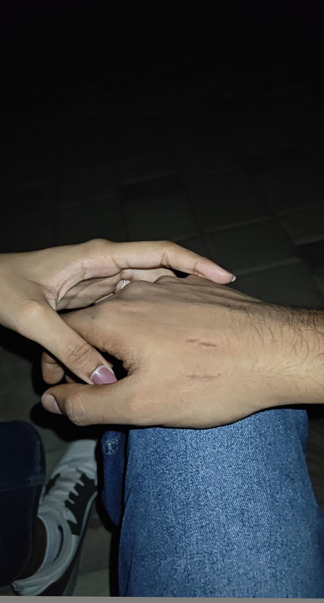
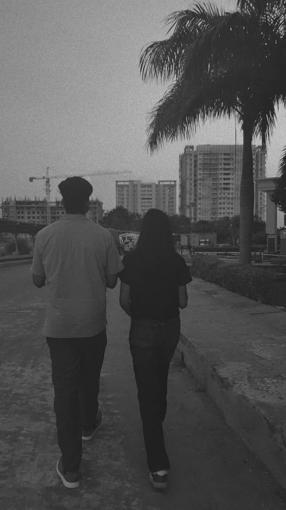
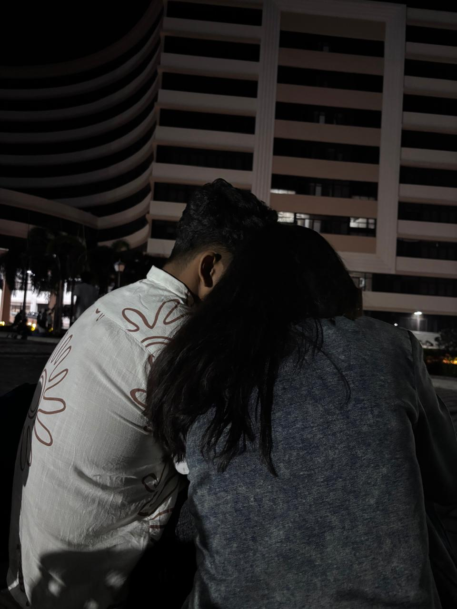
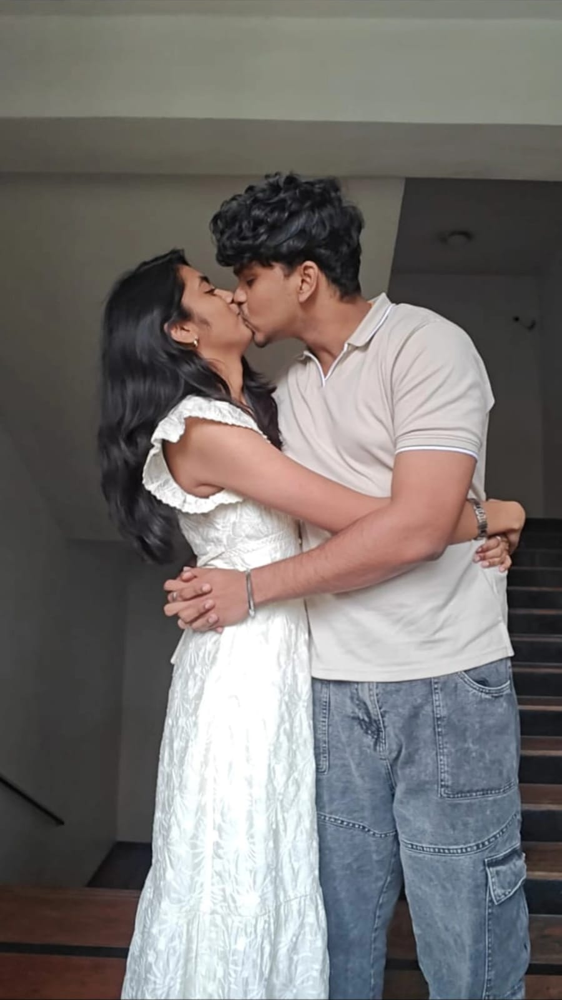
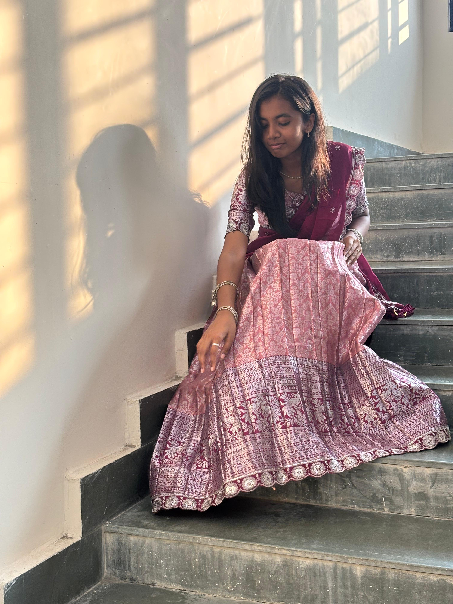
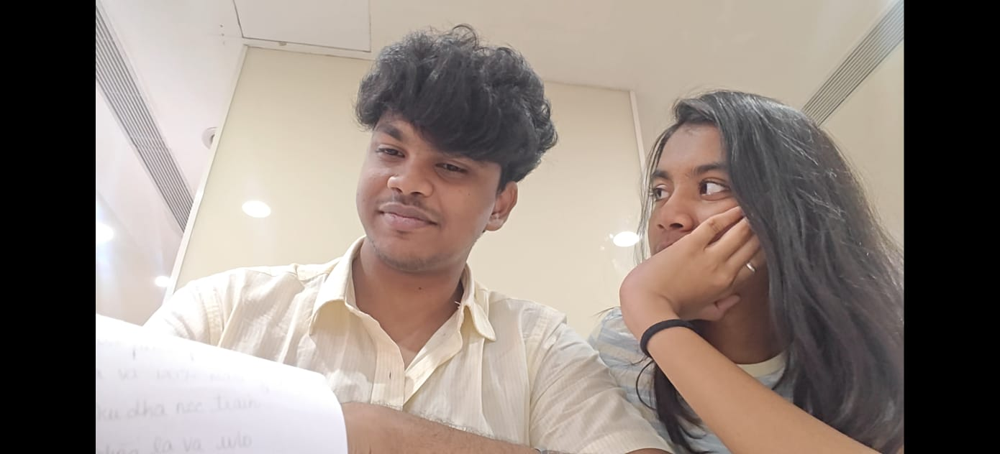

Today is one of the most beautiful days… my favorite day ❤️
Because today is my girl's birthday.
Happy Birthday to my girlfriend,
my well-wisher,
my motivator,
my baby,
my partner…
my everything. 💞
😂 Let's Be Honest
Gets angry in 0.5 seconds 😤
Says "I'm not mad" while clearly mad 😅
Acts innocent but causes chaos 😌
Still the cutest human alive ❤️
Queen of possessive 👑
📸 Our Memories
After four long years, this moment finally became real ❤️
What started as a simple memory in 2022 slowly turned into something deeper and more meaningful.
So many days passed, so many thoughts stayed unspoken, but somehow our paths found each other again.
Holding her hand for the first time as lovers felt different, like everything had finally fallen into place.
From strangers who once crossed paths to two hearts that now choose each other 💞
2025 became the year our story truly began ✨
10 November 2022 was just another normal day, or at least it felt like one at first.
I didn’t know that one simple moment would stay in my mind for years.
When I first saw her, she was just another person in the crowd, but somehow my eyes kept noticing her.
There was something about that moment that felt different, even if I didn’t understand it then.
I never imagined that the girl I saw that day would one day become someone so important in my life.
Life has a funny way of turning small moments into big memories. What looked like a random day actually became the beginning of our story.
Sometimes destiny starts quietly, without us realizing it.

11 November 2022 became another small but funny memory in our story.
In that moment she was taking a picture, living her normal day, not knowing that I was actually there behind the scene.
I was just standing in the background, watching quietly without realizing how meaningful that moment would become later.
Back then it was just a simple coincidence, nothing more. But today when I look at this picture, it feels like destiny was already placing us in the same frame.
Life is strange sometimes, the people who start as strangers slowly become the most important part of our lives. What was once just a background moment has now become a special memory.
And now that same girl is not just in my life, she is my love.

Our first meet wasn’t simple, it felt like something straight out of a movie.
I still remember sneaking into her college, carefully escaping the security just to see her for a few minutes.
My heart was beating fast, half from fear and half from excitement. But the moment I saw her, everything else disappeared.
We walked together that evening, talking, laughing, and enjoying every second like the world had paused just for us.
That day gave me one of my favorite memories, the small bite mark she left during that meet. It was crazy, risky, and unforgettable at the same time.
Looking back now, that moment feels like the true beginning of our story.
This picture reminds me of the day I traveled nearly 450 kilometers just to see her.
I had a semester exam on Monday, but my heart said seeing her was more important than anything else.
So on Sunday, I took the journey to Vijayawada without thinking twice.
The travel was long and tiring, but the moment I saw her, every kilometer felt worth it. Sometimes love makes you do things that don’t make sense to others.
But to me, that one day with her meant everything.
Even with an exam waiting the next day, my mind was only happy that I got to see her smile. Some journeys are not about distance, they are about who you travel for.

This was one of those candid moments that perfectly captured how happy we were together.
We were just talking, laughing, and enjoying the little time we had before I had to leave again.
Neither of us wanted that moment to end, but time always moves faster when you’re with someone you love. Every joke, every smile, and every second felt special.
It was the kind of happiness that comes from simply being together. Even though I knew I would soon have to leave, I tried to hold onto that moment as long as possible.
That laughter in this picture is something I’ll always remember. Because sometimes the smallest moments become the most meaningful memories
Our third meet in Hyderabad felt like a scene straight out of a movie. Both of our families were there in the same city, which made everything even more risky.
We both told small lies at home just to find a way to meet each other secretly.
My heart was full of excitement, fear, and happiness all at the same time. But the moment we met, all those worries slowly disappeared.
That day also became special because it was the first time we shared our cinema theatre romance. Sitting next to each other, stealing small moments and smiles, felt magical.
It was one of those memories that made our bond even stronger. Sometimes love grows the most in those hidden moments.

This picture reminds me of something very special for her. She always had a small insecurity about wearing a frock, something that made her hesitate for a long time.
But slowly, with encouragement and motivation, she decided to try it for the first time.
Seeing her walk confidently without fear that day made me so proud of her. She looked beautiful, but more than that, she looked happy and free.
It wasn’t just about the dress, it was about her confidence growing. Watching her overcome that insecurity felt like a victory for both of us.
That moment showed me how strong she really is. And to me, she looked absolutely perfect.

After knowing her for four years, this was the first time I saw her wearing a half saree. The moment I saw her, I was completely stunned and speechless.
She looked so elegant, cute, and mesmerizing all at the same time. It felt like I was seeing her in a completely new light.
Sometimes a single moment can make you fall in love all over again. That day was exactly like that for me. I couldn’t stop looking at her and smiling.
She didn’t just look beautiful, she looked unforgettable. It was one of those moments that will stay in my memory forever.

This picture carries one of the most emotional memories for me. It was our last meet before we had to go our separate ways again for some time.
She gave me a letter, something simple but full of her feelings. When I started reading it, my emotions became too heavy to control.
Every word in that letter reminded me how much she means to me. I couldn’t stop my tears while reading it. It was a moment filled with love, sadness, and gratitude all at once.
Sometimes love is not just about happy moments, it’s also about the tears we share. And that letter will always remain one of my most precious memories.
❤️ Our Story
When I first saw you at our relative’s wedding on November 10, 2022, time literally stopped for me ⏳❤️. Not in the dramatic cinema way 🎬… but in that quiet, overwhelming way where everything around you keeps moving, yet inside you, something freezes completely.
The music was playing 🎶, people were talking, kids were running around, relatives were laughing loudly… but the moment my eyes found you, all of it faded into the background like a muted scene. In that single second, it felt like Cupid didn’t just shoot an arrow — he aimed straight at my soul 🏹💘.
I still remember the lights shining above, the scent of flowers in the air 🌸, the decorations glowing softly ✨… but somehow, all of that became a blur. You stood there, unaware that someone across the hall had just lost control of his heartbeat. My heart started beating in a way it never had before 💓.
It wasn’t calm. It wasn’t steady. It was confused, excited, nervous, and strangely certain at the same time.
I didn’t understand what was happening… but I knew one thing — you were not ordinary. You were different. You were special 🌷. Something about your smile, something about the way you carried yourself, something about the sparkle in your eyes when you laughed… it felt important. It felt real.
And the funny part? You had absolutely no idea 😅. There I was trying to act normal, pretending to talk casually, while inside my brain was shouting, “Bro… this is not normal!” 🤦♂️🔥
My heart had already made a decision without even consulting me.
From that day on, without even realizing it, you slowly became part of my everyday thoughts. Not in an obsessive way… but in a peaceful way 🌙.
You became my calm during chaos 🌊, my random smile during boring afternoons ☀️, my quiet comfort during stressful nights 🌌. Even when we didn’t talk much, even when things felt uncertain, just knowing you existed somewhere in this world gave me a strange kind of peace 🌼.
I waited for you.
Not for attention.
Not for time pass.
Not because I had nothing better to do.
I waited because what I felt was real ❤️🔥.
Four long years.
Four years of silently choosing you.
Four years of telling myself, “If it’s meant to be, it will be.”
Four years of hoping in small quiet moments 🙏 that maybe one day, you would look at me the way I looked at you.
There were nights I questioned myself.
There were days I felt foolish.
There were moments I almost gave up.
But every time I remembered your smile, something inside me whispered, “Stay.” 🕊️
So I stayed. Not loudly. Not dramatically. Just patiently.
And when you finally accepted me… that moment healed every second of waiting 🥹✨. It felt like the universe gently whispered, “See? I told you.”
All those doubts…
all those fears…
all those lonely nights…
suddenly made sense.
Because now… it is not just “you” and “me.”
It is US 🤍.
And this US means more to me than those four years ever could.
You are not just someone I love.
You are my safe place 🏡.
My rabbit 🐰.
My soft corner.
My chaos and my calm.
You didn’t just enter my life — you slowly became part of my life. My habits. My plans. My dreams. My future 🌈.
And yes… sometimes you’re dramatic 😌.
Sometimes you overthink.
Sometimes you act like you don’t need reassurance — but I know you do.
And I love that about you too ❤️.
I love your strength 💪.
I love your vulnerability 💕.
I love your stubbornness.
I love the way you pretend to be serious but end up laughing first 😂.
You are not perfect.
And neither am I.
But somehow… together we feel right ✨.
And that feeling is rare.
Today is your 18th birthday 🎂🎉 — a brand new chapter in your life 📖.
A new phase. A new beginning.
Life will change.
Age will change.
Months will pass.
People will come and go.
But one thing will stay constant — me choosing you ❤️.
Maybe today I’m giving you a small digital surprise 💻🎁. Maybe I’m writing words on a screen.
But one day… I won’t need a website.
I’ll be standing right next to you.
Holding your hand 🤝.
Watching you cut the cake 🎂.
Wiping the cream from your cheek 😄.
Taking pictures with you 📸.
Making sure your birthday feels warm, real, and unforgettable.
Because you are not just my present.
You are my future 🛤️💫.
Thank you for loving me.
Thank you for choosing me.
Thank you for believing in us 🤍.
And no matter how many birthdays pass, no matter how old we grow…
I will always look at you the same way I did on November 10, 2022 —
like time just stopped…
and my heart finally found home 🏠💘.
💌 Things I Love About You
I love your flaws, because they make you real and uniquely you ❤️
I love your insecurities, because trusting me with them shows your strength 🤍
I love your insecurities, because trusting me with them shows your strength 🤍
I love how you get possessive sometimes, because it reminds me how much you care 😌
I love the way you slowly open up when you feel safe 🕊️
I love how you turn ordinary moments into special memories without even trying
I love the way you believe in us, even when things are difficult 🤝❤️
And most importantly…
I love you — not the perfect version, but the real version of you 💘
I don't love a perfect girl…
I love Aarthi ❤️
🎂 Happy 18th Birthday
Happy 18th Birthday, Aarthi 🎂🎉
Today isn’t just another day on the calendar — it’s the day the world was blessed with someone truly special 🌎✨. A girl who brings warmth, chaos, laughter, and love wherever she goes. And somehow, out of all the people in this huge world, I’m the lucky one who gets to call her mine ❤️.
Watching you grow, seeing your strength, your kindness, your stubbornness, and even your little dramatic moments 😌… all of it makes you the amazing person you are today. You’re not just beautiful on the outside, but you have a heart that shines brighter than anything else 💖.
As you step into your 18th year, a brand new chapter of life begins 📖✨. New dreams, new challenges, new memories, and so many beautiful moments waiting for you. I truly hope this year brings you happiness, success, peace, and everything your heart has ever wished for 🌟.
And no matter where life takes us, I promise one thing — I’ll always be cheering for you the loudest, supporting you when things feel heavy, and celebrating every little victory with you 🎊🤝.
Because you’re not just someone important in my life…
you are someone who makes my life brighter just by existing. ☀️💞
So today, smile a little bigger, laugh a little louder, and enjoy every moment of your special day 🥳🎂.
Happy Birthday once again, my girl.
May this year be as beautiful, unforgettable, and wonderful as you are 🌸💫.
🎁 A Small Surprise
I couldn't give you a huge gift this year.
But I made something special for you ❤️
Something simple but from my heart 💌
Press below to see it.